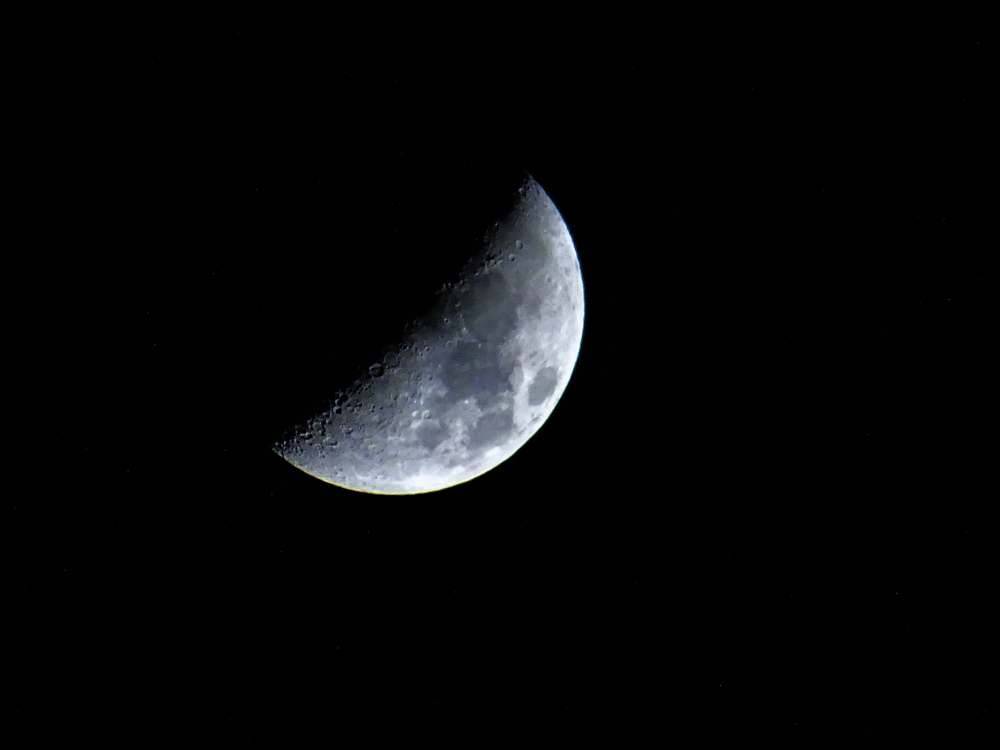

Water Lillies:
The Mysterious Night Sky


A comforting black looms over the ground
Hristo Fidanov
It stands mysteriously with it great stars wound
Eberhard Grossgasteiger
Holding unknown materials abound
Pixabay
Planets galore with creatures unfound
Pixabay
Perhaps ones with fins now icebound
Lone Jensen
Or ones with sentience who've never been aboveground
Pixabay
And worlds with no creatures sound.
Juhasz Imre
Forever expanding with a limitless bound
Pixabay